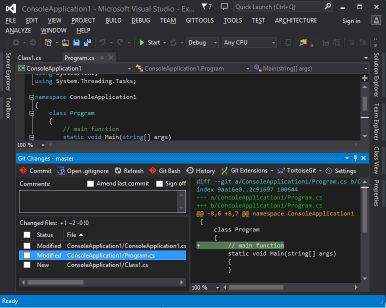
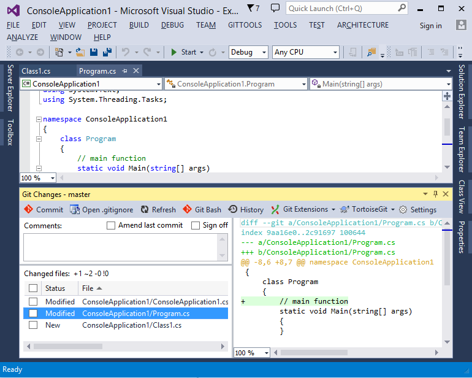

Commit! You deserve a good tool.
Using Git, you commit a lot. The Git Changes Window inside Visual Studio detects the file changes and displays the diff in real time. You can select files to review the changes. It helps you create meaningful code history.
Besides the Blue theme, the Dark theme and Light theme are supported too.



Code History! You can have a different view.
The Git history viewer is a unique tool that displays the commits horizontally to help you understand the history. Its simplified view mode highlights the history structure by only showing important commits. It also can be used to view the details of each commit, blame file, create/delete branches and tag, merge, rebase, cherry-pick, stash and etc.
Git Viewer runs outside Visual Studio. It can be used for non Visual Studio projects. Node.js, Ruby, PHP, Cordova/PhoneGap and etc.
Differences! You can edit files in diff mode.
From the Git Changes Window, you can launch the Visual Studio Diff Viewer with the committed version of file and the version being edited in it. It provides a clear view to see the changes/differences between the two versions.


Command It! Run Git commands inside Visual Studio.
Git is a feature rich and complicated system. There are many Git GUI tools, yet no tool is as good as running Git commands directly. Now you can run Git commands right inside Visual Studio. It even provides intellisense to the Git commands. E.g. It shows branch names when you need it. The Git console inside Visual Studio comes in V1.4.
The embedded console can also run npm, grunt, gulp and etc.